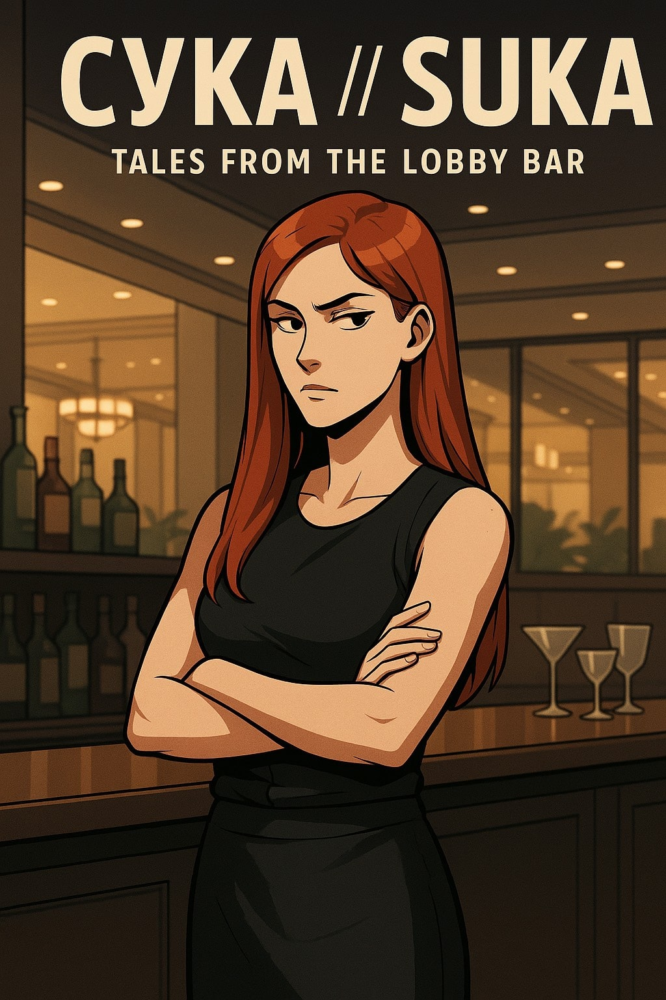

CYKA // SUKA: Tales from the Lobby Bar is an independent comic book inspired by early career days working as a barback in a coastal resort hotel in Cyprus. The narrative centers on the day-to-day working relationship between a barback and a bartender navigating a high-pressure hotel lobby bar during the intense summer season.
The term suka (derived from the Russian syka) translates literally to "female dog". In Slavic colloquial usage, it serves as a sharp profanity that captures the raw, unfiltered stress, friction, and survival dynamics of high-volume seasonal hospitality.
This comic is part of a greater band of digital creations—spanning comics, art books, and ebooks—hosted under the umbrella of Oceania, the digital platform housing this entire collection of creative works.
Download PDF Comic